Determinant and trace avoid explicit eigenvalue computation. For a 2×2 matrix, only a few multiplications and additions are needed, reducing computation at every image pixel.
Corner locations are covariant: the points rotate with the image.
Harris Under Scaling
A window that contains several gradient directions at one scale may see only a short, nearly straight edge after enlargement.
Harris with a fixed window size is not scale covariant. Resizing the image can change which corners are detected.
To handle scale changes, we need to adjust the smoothing scale and neighborhood size.
Scaling the Airport Image
We halve the image width and height, then rerun Harris with unchanged settings:
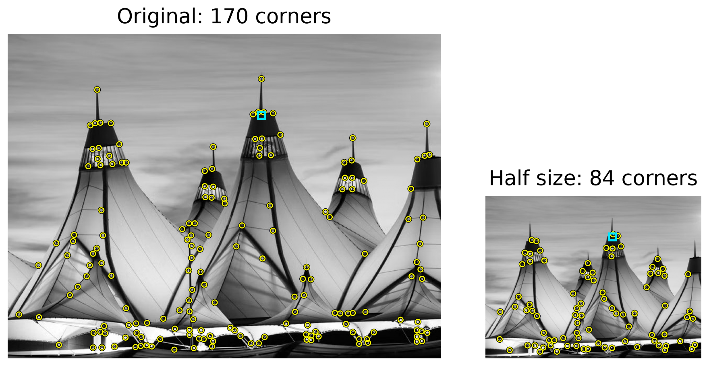
Cyan boxes: the same 13×13 max-suppression window. It covers more of the scene in the smaller image.
Different corners survive: shrinking changes image detail, and the fixed window suppresses more nearby peaks.
Harris is not scale covariant. We need to detect features across multiple scales.
Multi-Scale Detection
Automatic Scale Selection
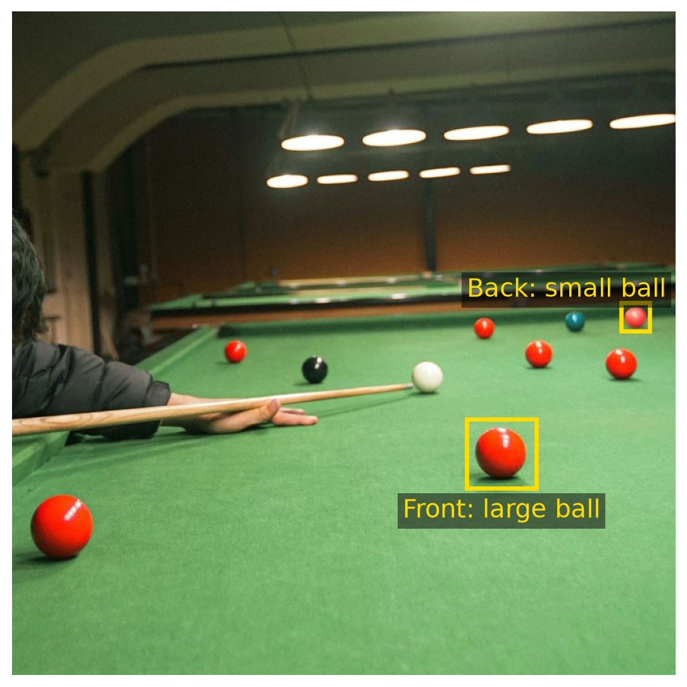
How can we make a feature detector scale-invariant?
How can we automatically select the scale?
Which filter size gives each ball its strongest response?
Recall: Laplacian-of-Gaussian Filter
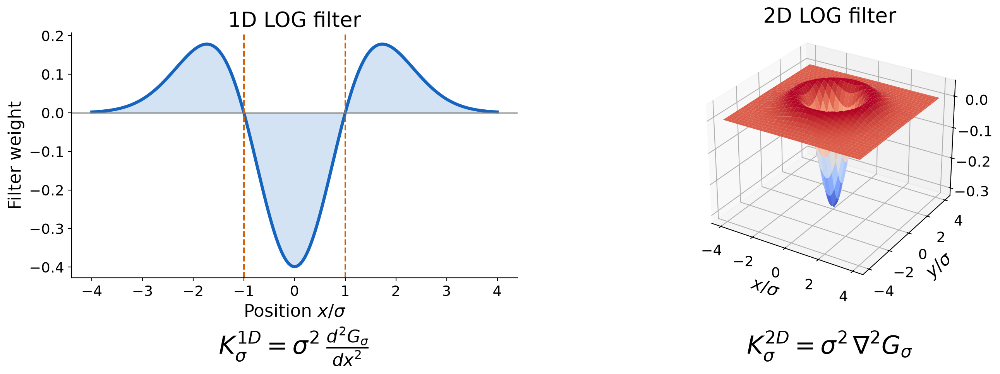
The LOG filter is the second derivative of a Gaussian kernel.
The scale \(\sigma\) controls the filter size.
Filter Respose vs. Signal Size
The response at the pulse center is strongest when the filter’s central lobe fits the pulse.
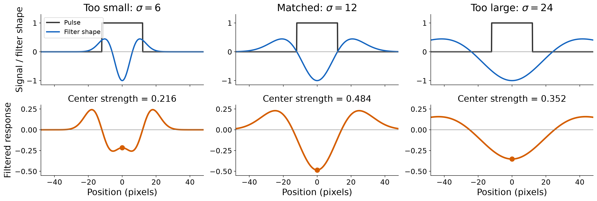
The pulse width is 24 pixels. At \(\sigma=12\), the filter’s zero crossings at \(\pm\sigma\) match its edges.
The highest response (in magnitude) is acheived when the pulse width matches the filter zero corossings.
Filter response vs. Feature Size
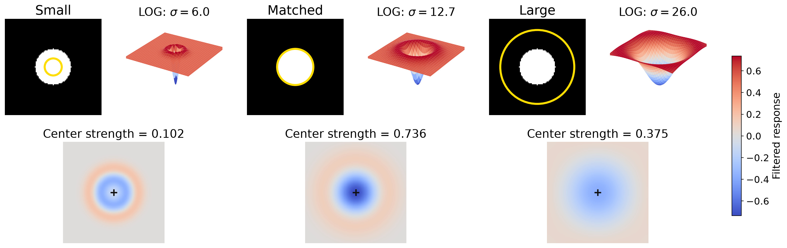
The same observation holds for a circular feature in a 2D image filtered by a LOG kernel.
\(R_\sigma=K^{2D}_\sigma*I\), and response strength \(=|R_\sigma|\)
The yellow circle marks the filter’s zero crossing, \(r=\sqrt{2}\sigma\).
The strongest response occurs when filter zero crossing fits the disk.
Filter Response at Different Scales
Filter the image with \(K_\sigma\), then measure the strongest response inside each fixed yellow window: \[R_\sigma=K_\sigma*I,\qquad m_W(\sigma)=\max_{(x,y)\in W}|R_\sigma(x,y)|.\]
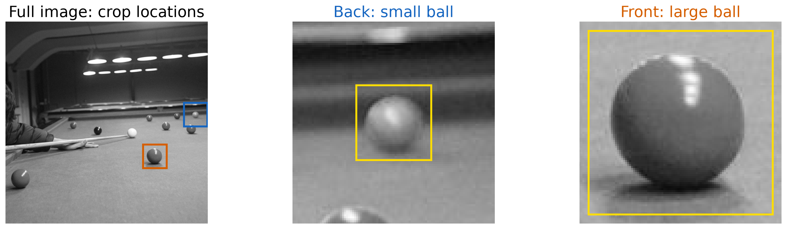
Colored boxes locate the crops. The yellow measurement windows stay fixed as \(\sigma\) changes.
Filter Response as the LOG Kernel Grows
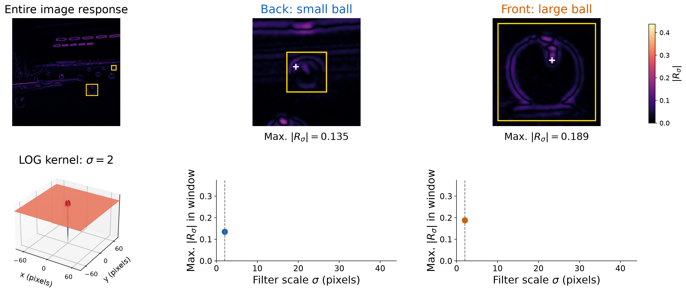
White crosses mark the window maxima. Small filters also respond to highlights.
Filter Response as the LOG Kernel Grows
Both windows respond to fine detail at this small filter scale.
Filter Response as the LOG Kernel Grows
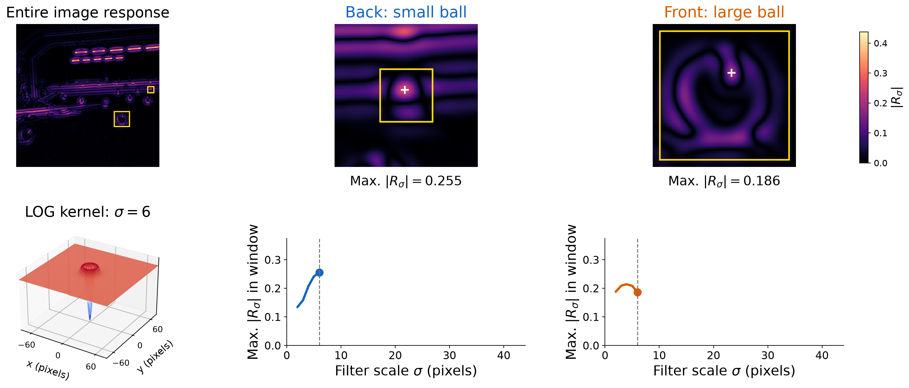
The small back ball reaches its strongest response at \(\sigma=6\).
Filter Response as the LOG Kernel Grows
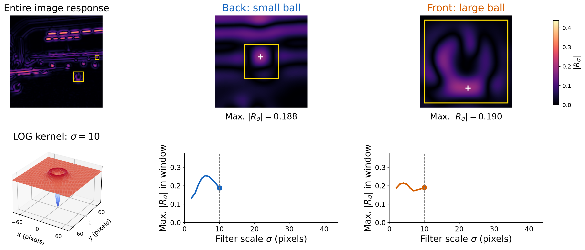
The back-ball response decreases as the filter grows beyond its size.
Filter Response as the LOG Kernel Grows
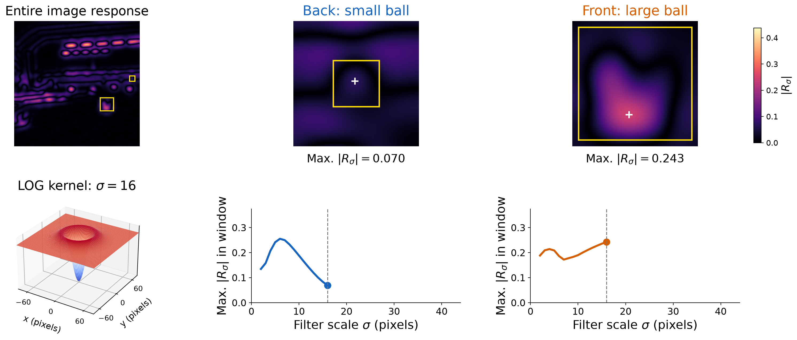
The larger filter now responds more strongly to the front ball.
Filter Response as the LOG Kernel Grows
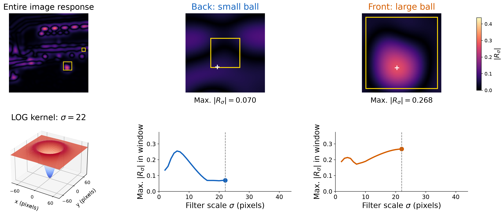
The large front ball reaches its strongest response at \(\sigma=22\).
Filter Response as the LOG Kernel Grows
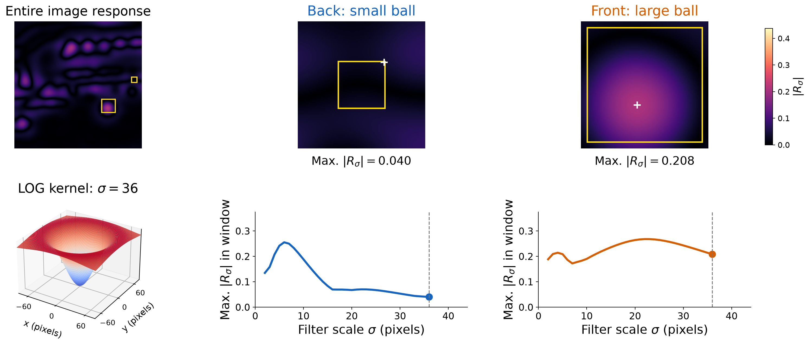
Both responses decrease once the filter grows beyond their selected scales.
Small and Large Balls Select Different Scales
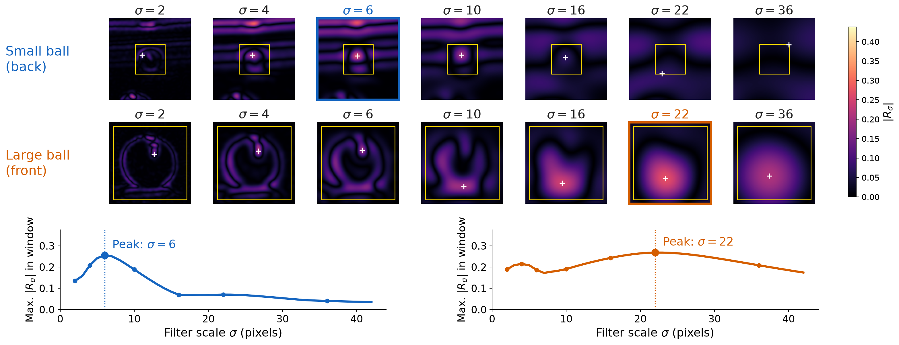
The small back ball peaks at a smaller filter scale. The large front ball peaks at a larger scale.
Automatic Scale Selection
Select each window’s strongest scale: \(\sigma_W^*=\operatorname{arg\,max}_\sigma m_W(\sigma)\).
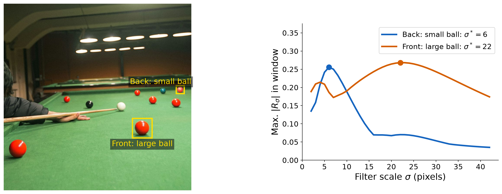
A single filter size cannot fit both balls. The peak of each response curve selects its scale.
Fixed Filter, Changing Image Size
Keep \(\sigma_0=4\) pixels and downsample the image by a factor \(d\).
The filter then covers an effective scale \(\sigma_{\mathrm{eff}}=d\sigma_0\) in the original image.
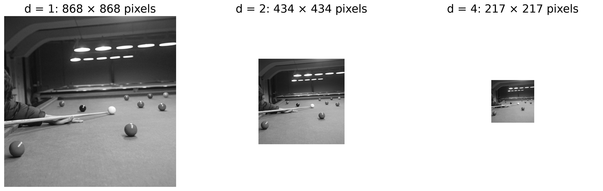
The windows follow the same balls as the image shrinks. Close-ups enlarge those regions for inspection.
Original Image, Fixed Filter
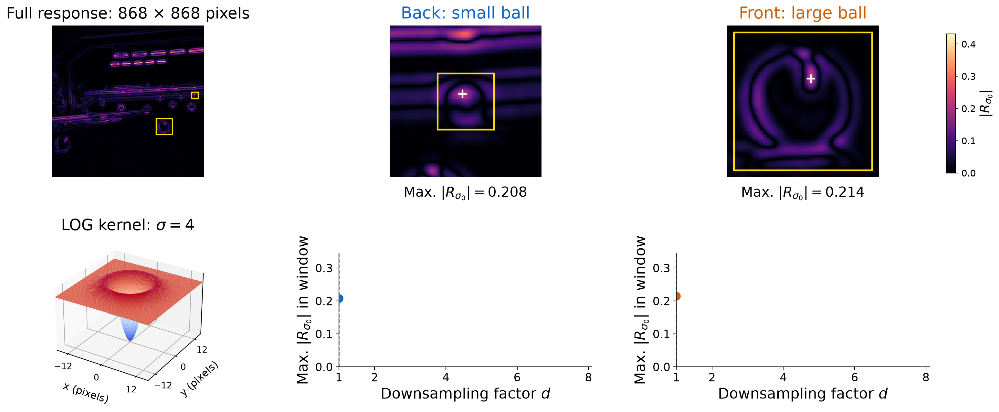
At full resolution, the fixed filter is small relative to both balls.
Smaller Image, Fixed Filter
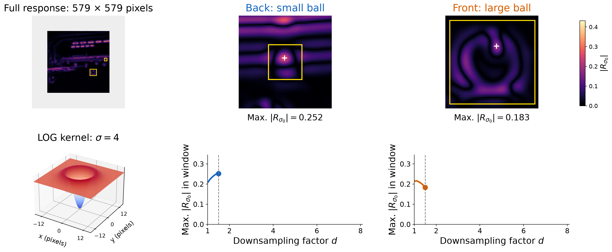
The small back ball reaches its peak near \(d=1.5\), with the filter still fixed at \(\sigma_0=4\).
Smaller Image, Fixed Filter
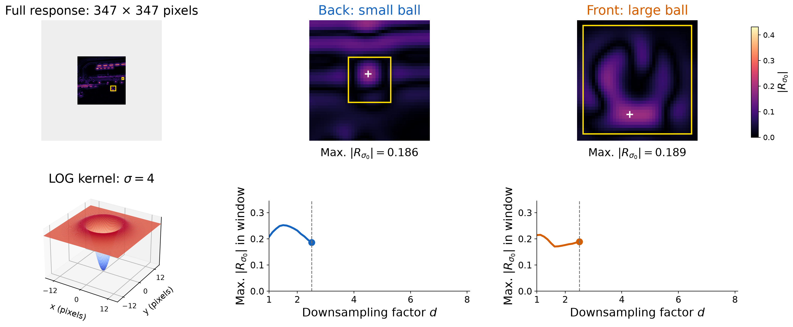
Further reduction makes the back ball too small for this filter.
Smaller Image, Fixed Filter
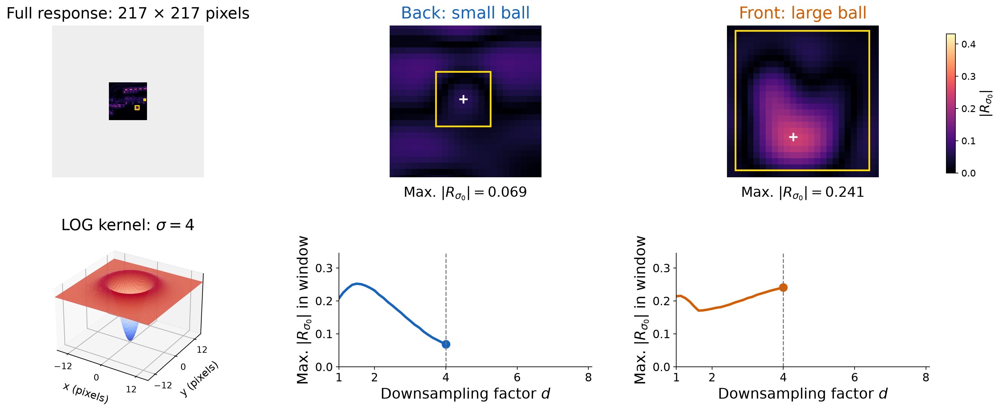
The front ball approaches the size that best matches the fixed filter.
Smaller Image, Fixed Filter
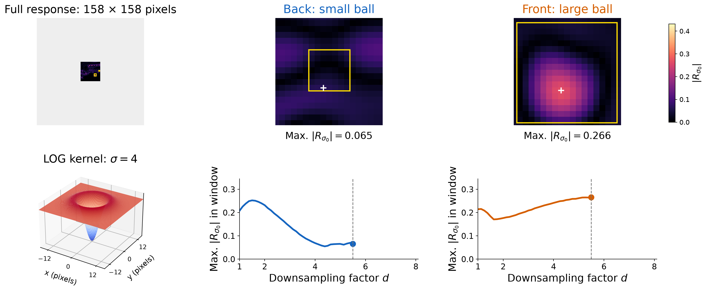
The large front ball reaches its peak near \(d=5.5\).
Smaller Image, Fixed Filter
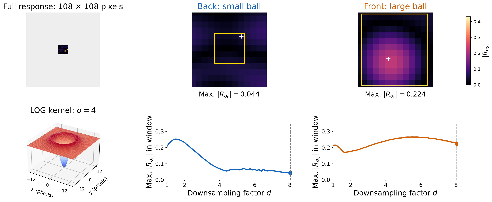
Both balls have shrunk past their strongest-response scales.
Different Balls Peak at Different Image Sizes
The filter stays fixed. Compare both balls across the downsampling factors \(d\).
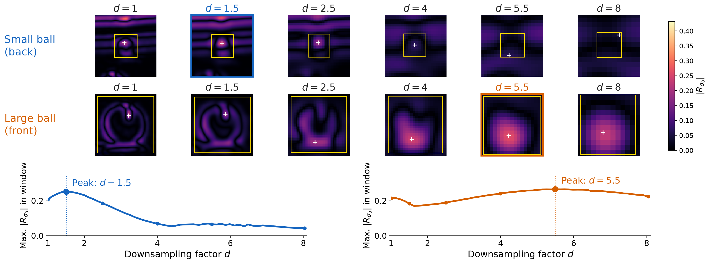
The larger ball needs more downsampling to match the same filter.
Characteristic Scale
The characteristic scale is the scale that produces the peak filter response.
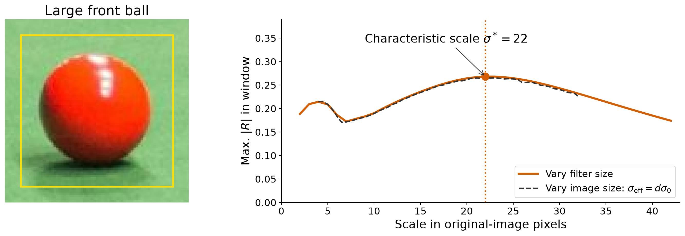
Growing the filter or shrinking the image gives approximately the same characteristic scale.
Multi-Scale Detection
Multi-Scale Detection Algorithm
For each filter size (or level of Gaussian pyramid)
compute feature response (e.g. Harris, Laplacian)
For each filter size (or level of Gaussian pyramid)
if local maximum and cross-scale
save scale and location of feature \((x, y, s)\)
Example: Multi-Scale Harris Corner Detection
Compute a comparable feature response \(R(x,y,\sigma)\) at each Gaussian scale.
Find local response maxima within each image plane.
Compare responses across scales; keep strong peaks and their \((x,y,\sigma)\).
Both smoothing and the averaging neighborhood grow with \(\sigma\).
Build the Stack and Find Spatial Peaks
responses = np.stack([harris_response(image, s) for s in scales])neighbors = np.ones((3, 3), np.uint8)neighbors[1, 1] =0# compare with the eight neighborsneighbor_max = np.stack([cv2.dilate(r, neighbors) for r in responses])spatial_peaks = responses > neighbor_max
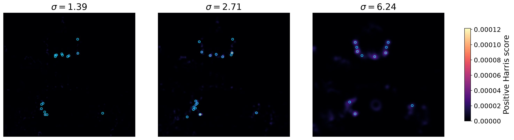
Cyan marks are spatial peaks above the display threshold. Their preferred scale is still unknown.
Keep the Strongest Scale at Each Location
best_scale = responses.argmax(axis=0) # one scale index per pixellevels = np.arange(len(scales))[:, None, None]keep = spatial_peaks & (levels == best_scale)keep &= responses >0.15* responses.max()keep[[0, -1]] =False# require an interior scale peakj, y, x = np.nonzero(keep)# remove detections too close to the image bordersmargin =4.5* scales[j] # three integration standard deviationsh, w = image.shapeinside = (x > margin) & (x < w-margin) & (y > margin) & (y < h-margin)j, y, x = j[inside], y[inside], x[inside]selected_scales = scales[j]
A surviving point is a spatial peak at its winning scale, with a strong positive score.
Two Corners, Two Winning Scales
Each curve uses one fixed pixel. The yellow ring shows the averaging neighborhood (\(3\sigma_I\)).
Check the Location as Well as the Scale
The selected pixel must beat its eight neighbors at the winning scale.
Numbers are Harris scores \(\times 10^5\). Cyan boxes mark the same pixel in every response patch.
Output: Corner Locations and Their Analysis Scales
corners = np.column_stack([x, y, selected_scales]) # each row: (x, y, sigma)
Scale describes the analysis neighborhood, not an object boundary.
These are maxima over the tested scales; not every corner has a unique preferred scale (that is, some corners remain strong over a broad range of filter sizes, e.g., an ideal L-shaped corner looks similar as you zoom in or out).
Local Feature Matching: Main Components
We have locations and scales. Next, describe and match the features.
1. Detection
Find a set of distinctive features (aka, keypoints).
2. Description
Extract a feature descriptor around each interest point as a vector.
3. Matching
Compute distances between feature vectors to find correspondences.
Why Do We Need Feature Descriptors?
Detection tells us where a feature is. How do we recognize the same feature in another image?
A descriptor encodes the appearance around a keypoint as a vector. Comparing these vectors helps us find corresponding features.
Possible Feature Descriptors
Templates
Pixel intensities in a patch.
Image gradients in a patch.
Histograms
Intensity, color, or texture measurements.
Gradient orientations (as used in SIFT).
Example: an 8-bin intensity histogram turns each patch into an 8-number descriptor.
Feature Descriptor: Histograms
A histogram divides values into bins and counts how many fall into each bin.
The histogram descriptor is \(\mathbf{h}=[1,\,3,\,5,\,7]\), with \(16\) pixels in total.
Global histogram: use the whole image.
Local histogram: use a patch around a keypoint.
A histogram records how often values occur, but not their pixel positions within the patch.
SIFT: Scale-Invariant Feature Transform
David G. Lowe, “Distinctive Image Features from Scale-Invariant Keypoints,”International Journal of Computer Vision, 2004 (~83,000 citations). Link to original paper.
Detect repeatable keypoints across image scales.
Describe their neighborhoods in a consistent scale and orientation.
Compare descriptors to find corresponding features across images.
The small blob reaches its strongest negative response at \(\sigma\approx5.7\); the large blob at \(\sigma\approx11.3\). Each feature selects a different scale.
Is It an Extremum in Both Position and Scale?
Compare a candidate with 8 neighbors at the same scale + 9 at the finer scale + 9 at the coarser scale.
Numbers show \(1000D_\sigma\). The boxed value is smaller than all 26 neighbors, so it survives as a DoG minimum. We also retain maxima.
def dog_is_extremum(stack, j, y, x): cube = stack[j-1:j+2, y-1:y+2, x-1:x+2] neighbors = np.delete(cube.ravel(), 13) # remove the central sample value = stack[j, y, x]return (value < neighbors.min()) or (value > neighbors.max())
Detect Keypoints by Scanning the Whole Stack
Search all locations and scales with a full neighborhood. Skip weak responses using a contrast threshold.
dog_threshold =0.08# chosen for this exampleinterior = dog_D[1:-1, 1:-1, 1:-1]candidates = np.argwhere(np.abs(interior) > dog_threshold) +1dog_detections = []for j, y, x in candidates:if dog_is_extremum(dog_D, j, y, x): dog_detections.append((x, y, dog_response_scales[j]))
Each candidate now has a position and a scale\((x,y,\sigma)\); circles show radius \(2\sigma\). SIFT then refines these estimates and rejects unstable edge-like candidates.
The Descriptor Starts with Local Gradients
At the detected scale, gradients describe the direction and strength of local brightness changes.
Each group of eight arrows represents one local histogram. Longer arrows mean larger bin sums. Flat cells contribute zeros. Read cells left to right, then top to bottom.
The Descriptor Values: Cells 1–8
Each bar becomes one number. Read the bins in the order \(0^\circ,45^\circ,\ldots,315^\circ\).
The vectors beneath these eight histograms supply descriptor components 1–64.
The Descriptor Values: Cells 9–16
Continue in the same order, appending eight numbers from each remaining cell.
Its components can exceed \(0.2\) again after the second normalization.
From the Teaching Example to Full SIFT in OpenCV
Full SIFT refines extrema and orientation peaks, shares votes across neighboring cells and bins, and can retain multiple orientations. Our teaching example used hard bins and one orientation.
sf_sift = cv2.SIFT_create(nfeatures=80)sf_keypoints, sf_descriptors = sf_sift.detectAndCompute(sf_image, None)# Each keypoint provides: .pt, .size, and .angle (in degrees).
Circles indicate keypoint scale; arrows show the assigned orientation. Symbols are enlarged \(4\times\) for visibility. OpenCV SIFT documentation